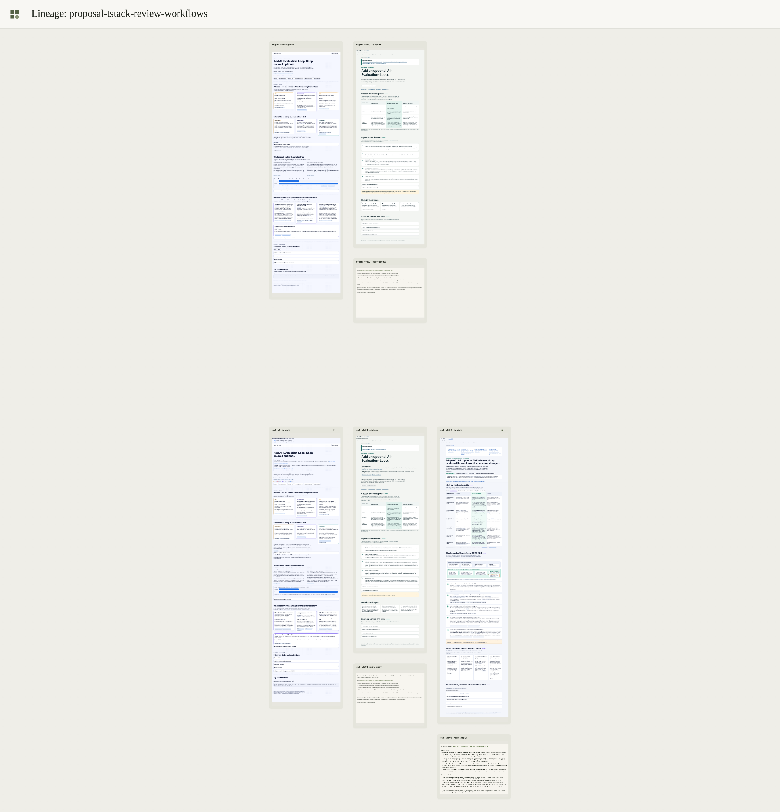

11
actions for the three feedback points.
Original report: index.html
Depth 1 of 3: the answer · Proposal, worked example · 14 November 2026
This page takes three test feedback points from the live check and walks each one through two options. O1 is chat, as today. O2 is a Tinka canvas, set up by hand. O2 costs 28 more actions in the first session and 8 more in each later one, and it never costs fewer.
What O2 gives for those actions is feedback that stays attached to a page after the chat session ends. Counting cannot say whether you would use that. So the decision of the original report stands: pilot O2 by hand on two lineages and build nothing yet.
11
actions for the three feedback points.
39
actions: the same 11, plus 8 for the session, plus 20 to set the canvas up.
19
actions: the same 11, plus 8 for the session.
Tinka 77ba29c (0.7.14)do-work 9de5839 (0.315.5)20 setup actions: counted by the original reportthe other counts: made on this page from the original report's recipe
An action is not a minute. Nobody timed either option, and no person has used the canvas yet. The three feedback points are test texts written by a labelled test actor.
Depth 2 of 3: the example
The example uses the lineage from the live check: 2026-11-04_1524_proposal-tstack-review-workflows and its revision 2026-11-04_1747_proposal-tstack-review-workflows-rev1. Together they hold five pages and three reply files. The revision is called rev1 below.
A feedback point is one thing you want changed or chosen. The live check wrote these three on the canvas as a test actor. Whether they are right about the tstack report does not matter here: they only show where the work goes.
"The decision line should name the default option."
Place: index.html of rev1. Its decision line reads "Add AI-Evaluation-Loop. Keep council optional."
Follow-up: ai-report revise.
"The matrix needs a cost row."
Place: the v1c02 page of rev1 and its reply file, at the phrase "seven-row comparison table".
Follow-up: ai-report second-opinion --editor-direction.
"Build the next page on v1c02."
Place: the three pages of rev1. The star marks one of them.
Follow-up: ai-report second-opinion with that page as the target.
One thing is joined for the example. The live check stored the text of F2 as a comment with no quote, and it stored a second comment on the phrase "seven-row comparison table". The original report does not print the text of that second comment. This page uses the first text with the second place. The meaning of the star in F3 is also this page's reading: the original report records only that the tile was starred.
One action is one deliberate thing a person or an agent does: open one page, run one command, write one feedback point, or paste one text. Reading and thinking are not counted, because they are the same in both options.
The two routes, in short:
Depth 2 of 3: step by step
A numbered circle is a counted action. A dashed circle is a step that is not counted. The actions that all three points share under O2 come after the three walks.
index.html of rev1. The catalog page has a row that links it. ai-reports/index.htmlai-report revise on rev1 with your text. It writes a new bundle and never edits the old one. ai-report.md:65Actions for F1: 3
ai-report revise.Actions for F1: 3, plus the shared actions below
v1c02 page. The iteration list at the top of rev1's index.html links it. rev1 index.html, lines 2 to 7ai-report second-opinion --editor-direction with the v1c02 page as the target. The new page shows your direction at its top. ai-report.md:87Actions for F2: 3
v1c02 page to read the matrix.v1c02 and tie the comment to the phrase "seven-row comparison table". Tinka answers matched. live: seven-row comparison table => matchedai-report second-opinion --editor-direction.Actions for F2: 3, plus the shared actions below
index.html, v1c01 and v1c02.ai-report second-opinion with that page as the target, so the next page builds on it. ai-report.md:22Actions for F3: 5
ai-report second-opinion.Actions for F3: 5, plus the shared actions below
None. The pages are already in the repository, and the feedback is already in chat when you finish writing it.
Shared actions: 0
Once per lineage: 20 actions. The original report counted them in the live check.
index.html. report_judge.go:25, 111, 168Once per session: 8 actions. This page counted them from the recipe in the original report.
git status --porcelain, and compare it at the end. 2 actions.board.get and feedback.list. 2 actions.Shared actions: 20 per lineage and 8 per session
Depth 2 of 3: the tally
The three points cost the same 11 actions in both options. Everything O2 adds sits around them: 8 actions per session and 20 per lineage.
Chart drawn from the counts on this page. The table below holds the same numbers.
| Cost line | O1 | O2 first | O2 later |
|---|---|---|---|
| F1, a note on a page | 3 | 3 | 3 |
| F2, a comment on a phrase | 3 | 3 | 3 |
| F3, a star | 5 | 5 | 5 |
| Session actions | 0 | 8 | 8 |
| Canvas setup, once per lineage | 0 | 20 | 0 |
| Total | 11 | 39 | 19 |
| Extra, compared with O1 | 0 | 28 | 8 |
"O2 first" is the first session on a lineage. "O2 later" is each later session on the same lineage, and it assumes that no page was added in between. Each new page adds one judge run and one tile, and a new second-opinion page also adds one scratch copy and one reply tile.
The extra cost of O2 depends on how many feedback points you write per session. Change the numbers to match how you review. The lineage is assumed to be like the test lineage: five pages and three reply files.
Formula: extra actions = 20 × lineages + 8 × lineages × sessions. The line above shows the default case and stays correct without JavaScript.
Depth 2 of 3: what the tally means
O2 never wins on actions. So the question is what you get for the extra ones. The cards show where each feedback point lives after you close the chat session and before any command has run.
With O1: the point exists only in the chat session. If the session ends before revise runs, the point is gone.
With O2: the note stays on the tile of that page. board.get returns it in any later session. A note has no author field.
With O1: the place is your description in words. The agent must find the matrix from that description.
With O2: the comment is tied to an exact phrase of the reply file. If the copy of the file changes, Tinka marks the comment stale.
original report, live check note 3With O1: the choice is a file name in chat. After the run, the new page names the page it was built on.
With O2: the star stays on the tile, and all pages of the lineage sit in one view. A star has no author field.
ai-report.md:87 · original report, live check note 2One thing gets worse with O2. From a phone, all three points still work under O1, through the pages and chat. None works under O2, because Tinka answers only on this computer. original report, K2
Pilot O2 by hand on the next two lineages. Build nothing and ship nothing yet. Use a source checkout of Tinka pinned at 77ba29c, and keep its files outside the repository.
The tally explains two lines of the original recommendation.
ai-report-canvas would replace. O3 is not built, so this is a design and not a measurement.This shows how to count in the pilot. It is not a pilot result, because a test actor wrote the three points through the command line.
| Rule | In this example |
|---|---|
| R1. At least half of the feedback points were written on the canvas before chat. | 3 of 3. R1 passes. The same three points typed straight into chat would give 0 of 3. |
| R2. At least one point used something chat cannot do. | F2 counts: a comment on a quoted phrase of a reply. F1 counts only if you read the note again in a later session. F3 does not count, because a star is not in R2's list. |
R3. Tinka never changed git status --porcelain or AGENTS.md. | It held in the live check: 0 bytes before and 0 bytes after. |
The pilot covers two lineages, or 14 days if two do not come up. Write feedback on the canvas first. Then count.
Adopt nothing (O1) when any one of these is true:
git status --porcelain or AGENTS.md in the repository.Go to O3 only when R1 and R2 pass on both lineages and R3 never happens.
index.html, section "Recommendation"Depth 2 of 3: the evidence behind the example
Both pictures come from the original report's live check. Every star, note and comment in them is test data.


Depth 2 of 3: corrections
Three small points differ from the repository. None changes the decision.
| The original says | What is true | Proof |
|---|---|---|
Footer: "The five images in screenshots/". | The folder holds four images, and the page shows four. | ls screenshots/: 4 filesindex.html: 4 img tags |
| O1: "After a run only the direction text survives, as a meta tag in the new page." | The direction is kept in two places in the new page: a meta tag, and a visible block at the top of the page. | ai-report.md:87rev1 v1c02 page, lines 458 to 459 |
| O1: "The catalog page lists every bundle". | It lists the bundles that existed when the catalog was last rebuilt. Today it holds 46, and neither proposal about Tinka from 2026-11-14 is in it. | grep -c tinka ai-reports/index.html ai-reports/catalog.json: 0 and 0 |
index.html. report_judge.go:25, 111, 168v1c02 page. v1c02 reply file, line 4Depth 3 of 3: every detail, folded
ai-reports/2026-11-14_1452_proposal-tinka-review-surface) says the tool schema has it and also did not run it.The original report's own open questions Q1 to Q7 are unchanged. They are in index.html, section "The details".
These show the form of each follow-up command. They carry test feedback, so they are examples and not commands to run.
# F1
ai-report revise ai-reports/2026-11-04_1747_proposal-tstack-review-workflows-rev1 'The decision line should name the default option'
# F2
ai-report second-opinion --editor-direction 'The matrix needs a cost row' ai-reports/2026-11-04_1747_proposal-tstack-review-workflows-rev1/index-v1c02-agy-gemini-4-argon-high-custom-decision-matrix-and-steps.html
# F3
ai-report second-opinion ai-reports/2026-11-04_1747_proposal-tstack-review-workflows-rev1/index-v1c02-agy-gemini-4-argon-high-custom-decision-matrix-and-steps.htmlThe command forms come from skills/do-work-toolbox/actions/ai-report.md, lines 22, 65 and 79.
v1c01 in the original bundle, v1c01 and v1c02 in rev1. Each copy puts that page in place of index.html.init, update policy off, board.create and workspace.update.item.create per tile: five captures and three reply copies.The clone of Tinka happens once for all lineages and is not in the tally. The recipe is in index.html, "Check it yourself".
ai-report-canvas. It would replace the 20 setup actions. The original report allows it only after the pilot passes. It is not built.index.html goes out of date when the iteration list is added.Full text, sources and the four capture lines: options, kill attempts, details.
ai-reports/ that holds index.html, its second-opinion pages, reply files and assets.index.html is v1, its first second-opinion page is v1c01, the next is v1c02.Sections of the original report used on this page:
Repository files read in this pass. The paths are relative to the repository root. No portable link is available for them, so they are given as text.
revise and second-opinion, and where a direction is kept.index.html.